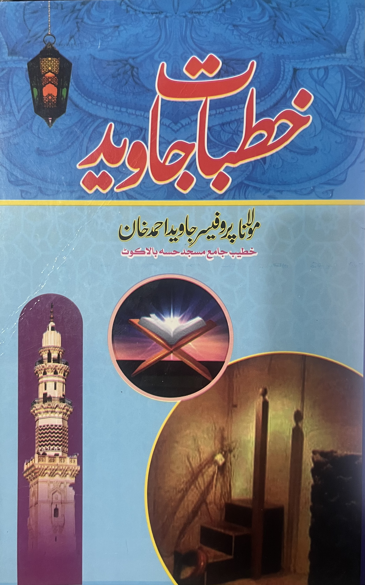
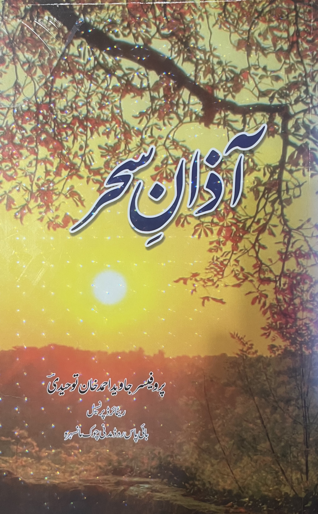
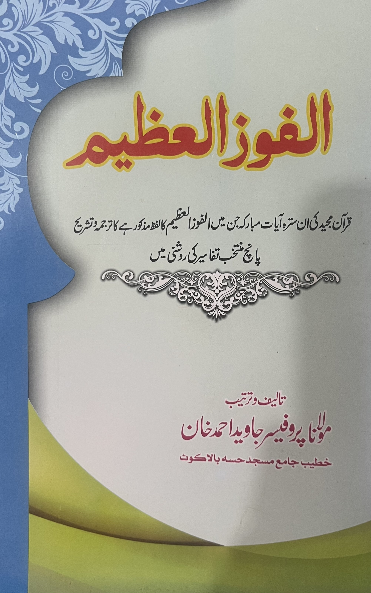

توحید، قرآن اور اصلاحِ امت کے موضوعات پر عمر بھر کی محنت — بالاکوٹ اور ہزارہ ڈویژن کی مساجد سے پھیلتی ہوئی معرفتِ الٰہی کی دعوت۔
پروفیسر جاوید احمد خان ایک ممتاز عالمِ دین، خطیب اور تعلیمی شخصیت ہیں جنہوں نے اپنی زندگی درس و تدریس اور دینِ اسلام کی خدمت کے لیے وقف کر رکھی ہے۔ آپ نے گورنمنٹ انٹر کالج رحیم کوٹ میں بحیثیتِ پرنسپل خدمات سرانجام دیں اور اسی عہدے سے سبکدوش ہوئے۔
اس کے ساتھ ساتھ آپ بالاکوٹ اور ہزارہ ڈویژن کے وسیع علاقے میں ایک معروف اور مقبول خطیب کی حیثیت سے پہچانے جاتے ہیں، جہاں آپ کئی بڑی مساجد میں توحید، قرآنِ کریم کی تعلیمات، اصلاحِ امت اور معرفتِ الٰہی جیسے موضوعات پر خطبات ارشاد فرماتے ہیں۔
آپ کا فکری و علمی رجحان مسلکِ دیوبند سے وابستہ ہے، اور آپ کے خطبات تحقیق، حوالہ جات اور دلائل کی بنیاد پر مرتب کیے جاتے ہیں، جن کا بنیادی مقصد سامعین میں اللہ تعالیٰ کی معرفت کو گہرا اور مضبوط کرنا ہے۔
پروفیسر جاوید احمد خان، مولانا ولی الرحمٰن رحمۃ اللہ علیہ کے سب سے بڑے صاحبزادے ہیں، جو بالاکوٹ کے علاقے کی ایک نمایاں اور معروف دینی شخصیت تھے۔ حضرت مولانا رحمہ اللہ کے انتقال کے بعد امامت، خطابت اور دینی خدمات کی ذمہ داریاں بھی انہوں نے سنبھالیں اور والد محترم کے مشن کو جاری رکھا۔

مصنف کے منتخب اسلامی خطبات کا مجموعہ، جس کا بنیادی مقصد قاری کے دل میں معرفتِ الٰہی (توحید) کو راسخ کرنا اور قرآن و سنت کی روشنی میں عملی زندگی گزارنے کی رہنمائی فراہم کرنا ہے۔ ہر خطبہ وسیع مطالعے اور حوالہ جات کی بنیاد پر مرتب کیا گیا ہے۔

مختلف اسلامی مواقع اور واقعات سے متعلق منظوم کلام پر مشتمل ایک خوبصورت شعری مجموعہ، جو دینی جذبات کو ادب کے پیرائے میں قاری تک پہنچاتا ہے۔

قرآنِ مجید کی اُن سترہ (۱۷) مبارک آیات کا ترجمہ و تشریح جن میں لفظ "الفوز العظیم" مذکور ہے، پانچ مختلف مستند تفاسیر کی روشنی میں تحقیقی انداز میں پیش کیا گیا ہے۔
دینی خدمات اور کتب کی اشاعت میں تعاون کے لیے رضاکارانہ عطیہ دیں